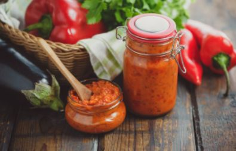
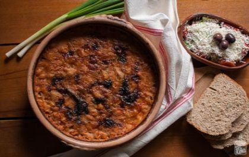

Ајвар
 Ајварот е еден од највкусните специјалитети и најголемите
тајни на балканската кујна, и води потекло од Македонија.
Ајварот се припрема на традиционален начин (на отворен
простор - пиперките се печат на шпорет на дрва), поради
што потребна е доста напорна рачна работа.
Потоа следува
внимателното лупење, при кое треба да се отстранат семките
и собирањето во мрежести вреќи во кои пиперките ја
поминуваат ноќта.
Следниот ден тие се сечат на ситни парчиња,
мелат и пржат на тивок оган. Треба да се забележи дека различни
семејства, различно го подготвуваат својот ајвар.
Така, некои во
смесата додаваат мелени домати, некои моркови, а најчесто се
користи модриот патлиџан како најефективен додаток на
традиционалниот ајвар.
Тавче-Гравче

Тавче-гравче e традиционален македонски специјалитет.
Се подготвува од свеж македонски грав и се сервира во
кај нас познатите македонски земјени чинии. Состојки:
грав, кромид, масло, сува црвена пиперка (може и повеќе)
црвен и црн пипер, сол и магдонос, а може да се стави и нане.
Гравот прво добро се чисти, се потопува да лежи во ладна
вода
најмалку три часа (по традиција се остава преку ноќ) за
да омекне
потоа се мие и се вари во лонец.По првото вриење водата
се
истура,па се става нова вода. Во втората вода се дсодава дел
од кромидот црниот пипер, а може и неколку парчиња ловоров
лист. Посебно во тавче запржуваме кромид заедно со црвен пипер.
Сувата пиперка можеме да ја запржиме заедно со кромидот,
а може и посебно. После 90-тина минути колку што му се
потребни на гравот да се свари, му го додаваме запржениот
кромид и пиперката и добро промешуваме.Потоа содржината
се става во земјен сад и се пече на температура
околу220
степени сè додека не запече одозгора. Земјената тава
покрај
што му дава препознатлив традиционален изглед на јадењето
ја чува
топлината со часови.